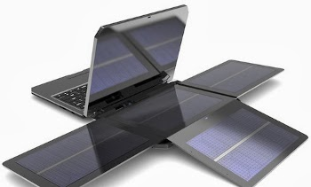

SOL, Notebook dengan Panel Surya
 Pernahkah Anda bayangkan pergi ke wilayah yang ketersediaan energi listriknya terbatas atau sering mati? Anda akan dibuat frustrasi bila ditugaskan bekerja di wilayah tersebut karena tak leluasa menggunakan notebook. Dari situlah David Snir mendirikan WeWi Telecommunications yang bakal memproduksi notebook yang dilengkapi dengan panel surya. Minggu-minggu ini, notebook yang dinamai SOL tersebut diluncurkan. Negara yang disasar pertama adalah Ghana, tempat di mana listrik sering byar-pet. Kabarnya WeWi yang berbasis di Kanada itu sudah mendirikan cabang perusahaannya di sini.
SOL akan dijual dengan harga sekitar US$350. Sebuah harga yang tidak mahal mengingat SOL dilengkapi dengan panel surya. Lipatan empat bidang panel surya yang berada di bagian belakang layar notebook dapat dibuka untuk menangkap sinar matahari. Panel surya tersebut juga dapat dicopot dan dihubungkan ke notebook melalui kabel. Sehingga pengguna dapat bekerja di tempat teduh sementara panel surya “dijemur” di bawah sinar matahari.
Di bawah terik sinar matahari, panel surya dapat mengisi-ulang baterai sekitar dua jam. Sekali isi-ulang, baterai dapat menghidupi notebook sekitar 8 hingga 10 jam.
Bobot SOL sekitar 5 pon dengan ketebalan 2 inci dan sudah diuji coba menjalankan Linux Ubuntu. Didayai oleh processor Intel Atom D2500 1,86 GHz dual-core yang telah terintegrasi dengan Intel GMA3600 Graphics; SOL juga dilengkapi dengan RAM 2-4 GB, harddisk 320 GB, kamera 3 MP, 3 port USB 2.0, port HDMI, Wi-Fi, Bluetooth 4.0, GPS, dan kompatible dengan jaringan 3G/4G.
SOL yang ramah lingkungan ini kabarnya juga akan tersedia di Amerika Utara akhir tahun ini. Kapan tersedia di Asia? Belum ada kabar mengenai hal itu.